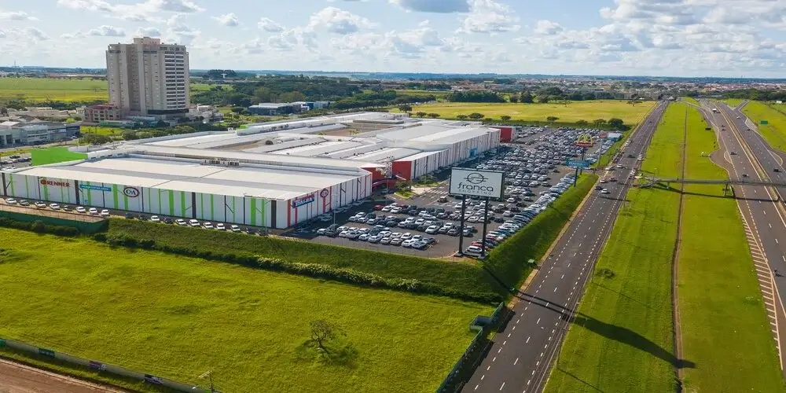
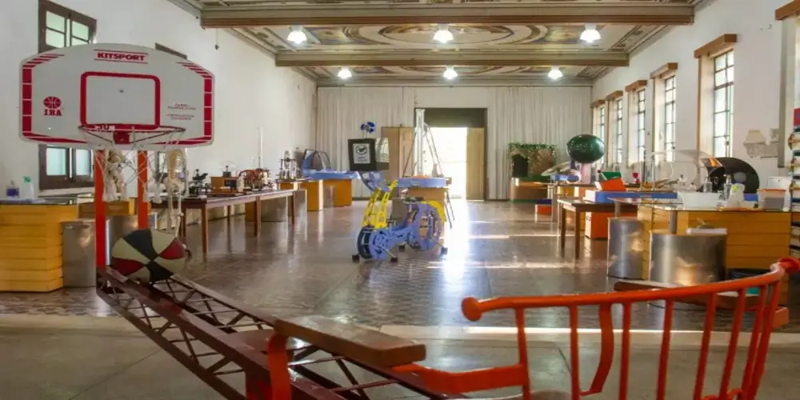
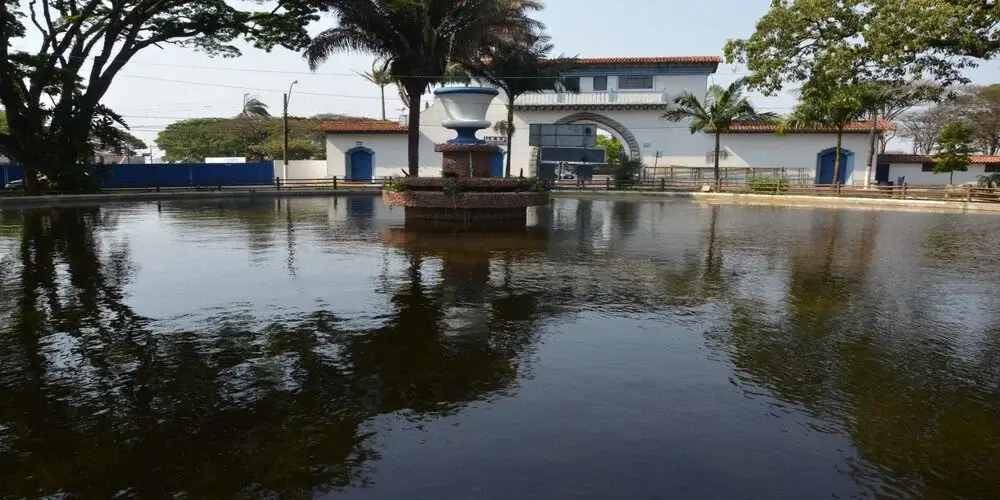
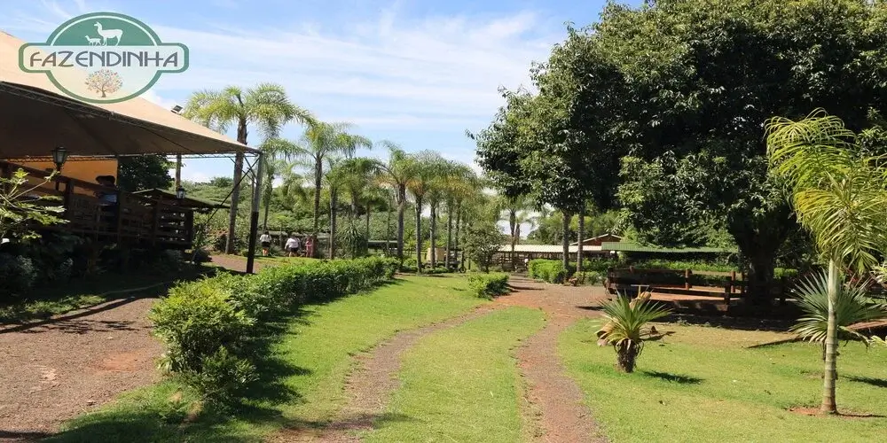
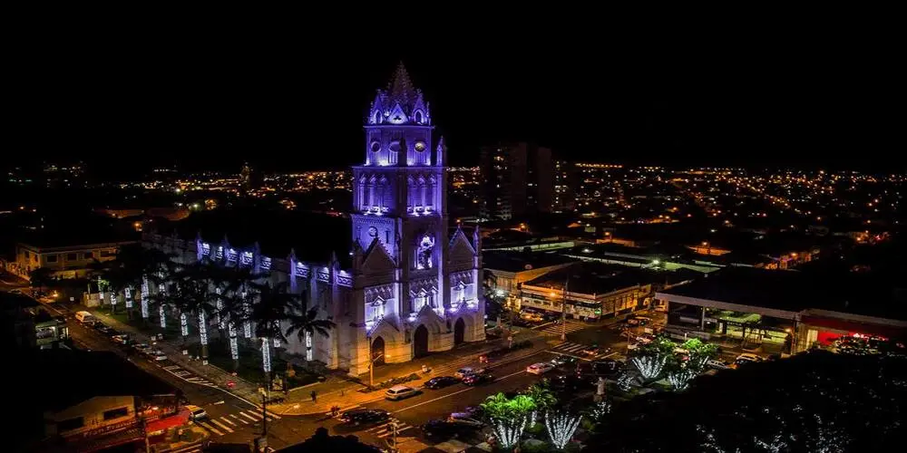
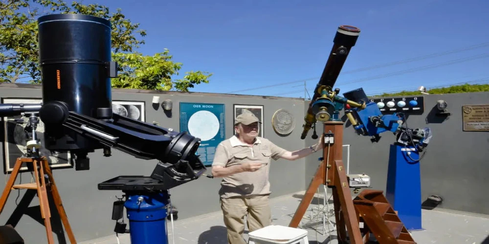

Franca is a city located in the state of São Paulo, Brazil. With a population of over 300,000 people, Franca is known for its strong economy, particularly in the shoe industry. The city is often referred to as the "Capital of Shoes" due to its significant production and export of footwear.
Key Statistics
Population: 300,000+
Main Industry: Shoe manufacturing
Cultural Attractions: Museums, theaters
Famous Landmark: Historic downtown area and Pedrocão (Basketball center)
Local Events
Stay updated with local events in Franca:
Shoe Expo on March 23rd - Annual event showcasing the latest trends in footwear.
Cultural Festivals in September - Celebrations of Franca's rich cultural heritage.
Street Markets - Weekly markets featuring local produce and crafts.
Contact Information
Email: franca@example.com
Phone: (16) 12345-6789
Center Address: 123 Main Street, Franca, São Paulo, Brazil
Local Photos of Interest

Franca Mall where great stores are located and different expositions are held throughout the year.

The Museum of Science is a hub for education and scientific exploration, offering interactive exhibitions in Physics, Chemistry, Biology, and Mathematics. Open to both students and the wider community, guided by knowledgeable educators for an immersive learning experience.

Step into a world of discovery at our cultural park, where you'll find a captivating array of exhibits featuring everything from wildlife to handcrafted treasures. Explore animal habitats, admire local craftsmanship, and immerse yourself in the rich tapestry of cultural heritage on display. A delightful journey awaits, blending nature, art, and tradition for an enriching experience for all ages.

Mini Farm Experience - Discover the charm of rural life within the city at our mini farm. Encounter a delightful array of typical farm animals alongside exotic species. Indulge in authentic Minas Gerais and regional cuisine at our rustic restaurant. A family-friendly atmosphere invites you to immerse yourself in the farm's ambiance, creating cherished memories in the heart of the city.

Igreja Matriz - Discover the rich history of our church located in Praça Nossa Senhora da Conceição. Constructed in the late 19th century, its inauguration took place in 1926, replacing the city's original church built in 1809. Undergoing two renovations in 1980 and 2005, it was elevated to the Cathedral of the Diocese of Franca in 1971. The church's eclectic architecture blends Gothic and Neoclassical elements, adding to its timeless allure.

Dr. Thomaz Novelino Municipal Astronomical Observatory - Explore the wonders of science through engaging activities, lectures, and tailored programs for all ages. Experience telescope-assisted stargazing sessions, identifying constellations, planets, and more. An immersive blend of education and fun awaits.